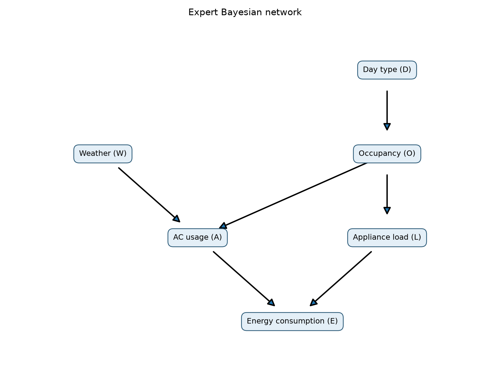
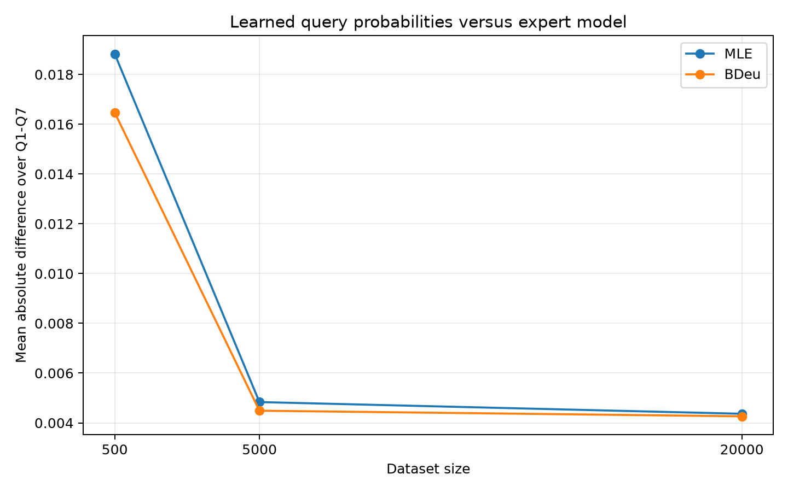

Group: Old I.N.D
| Member | Roll number | Assigned work and review |
|---|---|---|
| Vatsal Yadav | B24DS036 | Problem 1, Parts A-B: expert network, inference, hand calculation, independence |
| Rudra Dudhat | B24DS506 | Problem 1, Parts C-E: sampling, parameter learning, comparisons |
| Aryan Kose | B24EE009 | Problem 2, Tasks 1-6: PDDL, planning, verification, analysis |
| S Aparajith | B24DS50 | Problem 3, Tasks 1-6: FOL, CNF, Prolog, resolution proof |
All members: reproduce assigned results, capture genuine screenshots, review the report, and check the final ZIP. This is a proposed responsibility allocation, not a claim that each member has already completed or authored those sections.
Names and roll numbers are recorded exactly as supplied, including B24DS50.
The network has edges D -> O, W -> A, O -> A, O -> L, A -> E, and L -> E. Its factorization is
P(W,D,O,A,L,E) = P(W) P(D) P(O|D) P(A|W,O) P(L|O) P(E|A,L).
W is Weather, D is DayType, O is Occupancy, A is AC usage, L is ApplianceLoad, and E is EnergyConsumption. The state labels follow the assignment. The code constructs each CPT explicitly, checks each parent configuration sums to one, and checks the 96-row joint distribution sums to one. Inference sums compatible joint probabilities and divides by the probability of the evidence.

Each row below lists probabilities in the stated state order.
W: states Hot, Mild, Cold; parents none.
| Parent configuration | Hot | Mild | Cold |
|---|---|---|---|
| prior | 0.5000 | 0.3000 | 0.2000 |
D: states Weekday, Weekend; parents none.
| Parent configuration | Weekday | Weekend |
|---|---|---|
| prior | 0.7000 | 0.3000 |
O: states High, Low; parents D.
| Parent configuration | High | Low |
|---|---|---|
| Weekday | 0.4500 | 0.5500 |
| Weekend | 0.8000 | 0.2000 |
A: states On, Off; parents W, O.
| Parent configuration | On | Off |
|---|---|---|
| Hot, High | 0.9000 | 0.1000 |
| Hot, Low | 0.6000 | 0.4000 |
| Mild, High | 0.4000 | 0.6000 |
| Mild, Low | 0.1500 | 0.8500 |
| Cold, High | 0.1000 | 0.9000 |
| Cold, Low | 0.0500 | 0.9500 |
L: states Heavy, Light; parents O.
| Parent configuration | Heavy | Light |
|---|---|---|
| High | 0.7500 | 0.2500 |
| Low | 0.3500 | 0.6500 |
E: states High, Low; parents A, L.
| Parent configuration | High | Low |
|---|---|---|
| On, Heavy | 0.9200 | 0.0800 |
| On, Light | 0.6800 | 0.3200 |
| Off, Heavy | 0.5500 | 0.4500 |
| Off, Light | 0.1200 | 0.8800 |
| Query | Probability | Result |
|---|---|---|
| Q1 | P(E=High) | 0.5806310375 |
| Q2 | P(E=High given W=Hot) | 0.7062657500 |
| Q3 | P(E=High given D=Weekend) | 0.6401985000 |
| Q4 | P(E=High given W=Cold, O=High) | 0.4842500000 |
| Q5 | P(W=Hot given E=High) | 0.6081880785 |
| Q6 | P(A=On given E=High) | 0.6928666813 |
| Q7 | P(A=On given E=High, L=Heavy) | 0.6498993030 |
Q6 is 0.6928666813 and Q7 is 0.6498993030. Observing high consumption makes heavy AC use more likely. Once heavy appliance load is known, it provides another explanation for high consumption, so the posterior probability of AC use decreases. A and L also share the ancestor O; they are not marginally independent causes. The numerical comparison still shows the explaining-away effect requested in the assignment.
Sum out the five other variables:
P(E=High) = sum_w sum_d sum_o sum_a sum_l P(w)P(d)P(o|d)P(a|w,o)P(l|o)P(E=High|a,l).
First, P(O=High) = 0.70*0.45 + 0.30*0.80 = 0.555, so P(O=Low)=0.445.
W is independent of O because the unconditioned paths between them contain
colliders. For fixed w,o, write a=P(A=On|w,o) and l=P(L=Heavy|o).
Then summing the four A,L configurations gives
g(w,o) = 0.92*a*l + 0.68*a*(1-l) + 0.55*(1-a)*l + 0.12*(1-a)*(1-l)
= 0.12 + 0.56*a + 0.43*l - 0.19*a*l.
For O=High this is 0.4425 + 0.4175*a; for O=Low it is
0.2705 + 0.4935*a. The remaining sum has six terms:
| W | O | P(w)P(o) | g(w,o) | Contribution |
|---|---|---|---|---|
| Hot | High | 0.277500 | 0.81825000 | 0.2270643750 |
| Hot | Low | 0.222500 | 0.56660000 | 0.1260685000 |
| Mild | High | 0.166500 | 0.60950000 | 0.1014817500 |
| Mild | Low | 0.133500 | 0.34452500 | 0.0459940875 |
| Cold | High | 0.111000 | 0.48425000 | 0.0537517500 |
| Cold | Low | 0.089000 | 0.29517500 | 0.0262705750 |
Adding these contributions gives 0.5806310375, matching exact code inference to floating-point precision.
Numerical checks:
| Comparison | First value | Second value |
|---|---|---|
| P(W=Hot) vs P(W=Hot given D=Weekend) | 0.5000000000 | 0.5000000000 |
| P(W=Hot given E=High) vs also D=Weekend | 0.6081880785 | 0.5997514833 |
| P(W=Hot given O=High) vs also L=Heavy | 0.5000000000 | 0.5000000000 |
independence_checks.csv checks every W,D state pair unconditionally and
for both E values, and every W,L state pair for both O values. Independence
uses joint-versus-product comparisons; one unequal pair is sufficient to
disprove conditional independence.
The sampler is implemented directly, without a library sampling routine.
It visits W,D,O,A,L,E in topological order and draws each state using the
appropriate CPT cumulative probability. The seed is 2026, using Python's
random.Random. Generate 20,000 rows once and take prefixes of length 500,
5,000, and 20,000. The datasets are nested, not independent replicates.
The three CSV files contain the actual generated data.
| Weather | Count | Frequency |
|---|---|---|
| Hot | 270 | 0.540000 |
| Mild | 137 | 0.274000 |
| Cold | 93 | 0.186000 |
| Weather | Occupancy | Count |
|---|---|---|
| Hot | High | 159 |
| Hot | Low | 111 |
| Mild | High | 71 |
| Mild | Low | 66 |
| Cold | High | 45 |
| Cold | Low | 48 |
| Weather | Count | Frequency |
|---|---|---|
| Hot | 2509 | 0.501800 |
| Mild | 1490 | 0.298000 |
| Cold | 1001 | 0.200200 |
| Weather | Occupancy | Count |
|---|---|---|
| Hot | High | 1400 |
| Hot | Low | 1109 |
| Mild | High | 817 |
| Mild | Low | 673 |
| Cold | High | 571 |
| Cold | Low | 430 |
| Weather | Count | Frequency |
|---|---|---|
| Hot | 10068 | 0.503400 |
| Mild | 5956 | 0.297800 |
| Cold | 3976 | 0.198800 |
| Weather | Occupancy | Count |
|---|---|---|
| Hot | High | 5584 |
| Hot | Low | 4484 |
| Mild | High | 3331 |
| Mild | Low | 2625 |
| Cold | High | 2198 |
| Cold | Low | 1778 |
The structure is held fixed for both estimators. For node i with r states, q parent configurations, counts N_ijk, and parent count N_ij:
theta_ijk = N_ijk / N_ij.theta_ijk = (N_ijk + 10/(r*q)) / (N_ij + 10/q).The equivalent sample size is 10 per node, spread uniformly over all its
CPT cells. Parameters are learned for every node, including both roots. State
spaces are fixed to the specification. All observed datasets contain every
parent configuration, so the uniform fallback for an unidentified MLE row is
never used. Full learned CPTs are saved in the six cpts_*.json files.
Both On and Off probabilities are shown beside the expert CPT.
| Weather | Occupancy | Expert_On | Expert_Off | MLE_On | MLE_Off | BDeu_On | BDeu_Off |
|---|---|---|---|---|---|---|---|
| Hot | High | 0.900000000 | 0.100000000 | 0.918238994 | 0.081761006 | 0.913900415 | 0.086099585 |
| Hot | Low | 0.600000000 | 0.400000000 | 0.603603604 | 0.396396396 | 0.602071006 | 0.397928994 |
| Mild | High | 0.400000000 | 0.600000000 | 0.380281690 | 0.619718310 | 0.383027523 | 0.616972477 |
| Mild | Low | 0.150000000 | 0.850000000 | 0.196969697 | 0.803030303 | 0.204433498 | 0.795566502 |
| Cold | High | 0.100000000 | 0.900000000 | 0.088888889 | 0.911111111 | 0.103571429 | 0.896428571 |
| Cold | Low | 0.050000000 | 0.950000000 | 0.041666667 | 0.958333333 | 0.057046980 | 0.942953020 |
| Weather | Occupancy | Expert_On | Expert_Off | MLE_On | MLE_Off | BDeu_On | BDeu_Off |
|---|---|---|---|---|---|---|---|
| Hot | High | 0.900000000 | 0.100000000 | 0.915714286 | 0.084285714 | 0.915219976 | 0.084780024 |
| Hot | Low | 0.600000000 | 0.400000000 | 0.605049594 | 0.394950406 | 0.604891957 | 0.395108043 |
| Mild | High | 0.400000000 | 0.600000000 | 0.429620563 | 0.570379437 | 0.429763844 | 0.570236156 |
| Mild | Low | 0.150000000 | 0.850000000 | 0.158989599 | 0.841010401 | 0.159832016 | 0.840167984 |
| Cold | High | 0.100000000 | 0.900000000 | 0.092819615 | 0.907180385 | 0.094004657 | 0.905995343 |
| Cold | Low | 0.050000000 | 0.950000000 | 0.041860465 | 0.958139535 | 0.043629344 | 0.956370656 |
| Weather | Occupancy | Expert_On | Expert_Off | MLE_On | MLE_Off | BDeu_On | BDeu_Off |
|---|---|---|---|---|---|---|---|
| Hot | High | 0.900000000 | 0.100000000 | 0.907772206 | 0.092227794 | 0.907650534 | 0.092349466 |
| Hot | Low | 0.600000000 | 0.400000000 | 0.604817128 | 0.395182872 | 0.604778182 | 0.395221818 |
| Mild | High | 0.400000000 | 0.600000000 | 0.398078655 | 0.601921345 | 0.398129626 | 0.601870374 |
| Mild | Low | 0.150000000 | 0.850000000 | 0.139428571 | 0.860571429 | 0.139657360 | 0.860342640 |
| Cold | High | 0.100000000 | 0.900000000 | 0.089626934 | 0.910373066 | 0.089937869 | 0.910062131 |
| Cold | Low | 0.050000000 | 0.950000000 | 0.042744657 | 0.957255343 | 0.043172879 | 0.956827121 |
Absolute differences use the unrounded computed values.
| Query | Expert | MLE | Bayesian | AbsDiff_MLE | AbsDiff_Bayesian |
|---|---|---|---|---|---|
| Q1 | 0.580631038 | 0.592554211 | 0.590745732 | 0.011923173 | 0.010114694 |
| Q2 | 0.706265750 | 0.707970856 | 0.702865327 | 0.001705106 | 0.003400423 |
| Q3 | 0.640198500 | 0.653104782 | 0.646961488 | 0.012906282 | 0.006762988 |
| Q4 | 0.484250000 | 0.522060088 | 0.524402361 | 0.037810088 | 0.040152361 |
| Q5 | 0.608188078 | 0.645180230 | 0.637667009 | 0.036992152 | 0.029478931 |
| Q6 | 0.692866681 | 0.721506274 | 0.717685381 | 0.028639592 | 0.024818700 |
| Q7 | 0.649899303 | 0.651713775 | 0.649355322 | 0.001814472 | 0.000543981 |
| Query | Expert | MLE | Bayesian | AbsDiff_MLE | AbsDiff_Bayesian |
|---|---|---|---|---|---|
| Q1 | 0.580631038 | 0.581638722 | 0.581483277 | 0.001007684 | 0.000852240 |
| Q2 | 0.706265750 | 0.706872714 | 0.706311878 | 0.000606964 | 4.61278060045478e-05 |
| Q3 | 0.640198500 | 0.645648548 | 0.645009075 | 0.005450048 | 0.004810575 |
| Q4 | 0.484250000 | 0.486527559 | 0.486851614 | 0.002277559 | 0.002601614 |
| Q5 | 0.608188078 | 0.609843731 | 0.609114328 | 0.001655652 | 0.000926249 |
| Q6 | 0.692866681 | 0.705686149 | 0.705295867 | 0.012819468 | 0.012429186 |
| Q7 | 0.649899303 | 0.659934848 | 0.659657170 | 0.010035545 | 0.009757867 |
| Query | Expert | MLE | Bayesian | AbsDiff_MLE | AbsDiff_Bayesian |
|---|---|---|---|---|---|
| Q1 | 0.580631038 | 0.580005495 | 0.579967785 | 0.000625542 | 0.000663253 |
| Q2 | 0.706265750 | 0.710105206 | 0.709960033 | 0.003839456 | 0.003694283 |
| Q3 | 0.640198500 | 0.640395268 | 0.640242476 | 0.000196768 | 4.397587802085212e-05 |
| Q4 | 0.484250000 | 0.475909815 | 0.476011086 | 0.008340185 | 0.008238914 |
| Q5 | 0.608188078 | 0.616316507 | 0.616126533 | 0.008128428 | 0.007938454 |
| Q6 | 0.692866681 | 0.698532051 | 0.698437440 | 0.005665370 | 0.005570758 |
| Q7 | 0.649899303 | 0.653660835 | 0.653595220 | 0.003761532 | 0.003695917 |
| Dataset size | MLE | BDeu |
|---|---|---|
| 500 | 0.018827266 | 0.016467440 |
| 5000 | 0.004836132 | 0.004489123 |
| 20000 | 0.004365326 | 0.004263651 |

Q4 is the largest-error query for both estimators: MLE error 0.037810088,
BDeu error 0.040152361. Its evidence W=Cold,O=High has probability
0.20*0.555=0.111, or 55.5 expected observations in 500 samples. The actual
dataset has only 45 such rows. This gives relatively little information
about the corresponding AC CPT row. Q4 also uses the learned appliance and
energy CPTs, so its error is not determined by that single evidence count.
For this seeded 500-sample dataset, BDeu has the smaller mean absolute difference: 0.016467440 versus MLE's 0.018827266. Its pseudocounts reduce variance in sparsely observed CPT rows. This comes with shrinkage toward uniform probabilities, which can add bias: BDeu is worse on Q2 and Q4 in this run. It is therefore better on average here, not uniformly better. Both estimators improve in average error across these three dataset sizes. Individual queries need not improve monotonically; Q4 worsens between 5,000 and 20,000 rows. One seeded experiment does not establish universal estimator superiority.
Domain.pddl declares only :strips and :typing. Types are rover, location,
rock, bay, and drill. Predicates record rover, rock and drill locations,
directed connectivity, bay ownership and contents, bay emptiness, rock type,
and permanent drill possession. move, pick-drill, collect-soft,
collect-hard, and deposit implement the four conceptual actions; collect
is split into two STRIPS actions to avoid disjunctive or negative preconditions.
Collection requires co-location and an empty owned bay, removes the rock's ground location, and fills that bay. Hard collection additionally requires the drill. Deposit is allowed at the current location, including locations other than Base, as the brief permits. Pickup permanently records possession of the drill; it does not consume a rock storage bay. Negative effects are normal STRIPS deletes; no negative preconditions are used.
Problem.pddl contains Curiosity, two empty bays, Drill1 at SiteE, and the
five rocks at their specified sites. Each two-way connection is represented
by two facts. Only SiteC -> SiteD is added for the downhill route.
Problem_extended.pddl adds soft Rock6 at SiteE and hard Rock7 at SiteF.
Both Base -> SiteB and SiteB -> Base are absent. Goals require all rocks
and the rover at Base; both bays must also be empty. Explicit empty-bay
goals in the extended problem are consistent with the base mission and
already follow from all rocks being on the ground at Base.
Pyperplan 2.1 parses and grounds the submitted PDDL files. Grounded operators
are sorted by name, and subprocesses fix PYTHONHASHSEED=0 for repeatable
tie-breaking. Every action has unit cost.
lower_bound.py. No preferred-operator pruning or weighted A* is used.The handling bound counts two actions per undelivered ground rock (collect, deposit), one per carried rock (deposit), and one drill pickup when an undelivered hard rock requires it. These handling actions are necessary.
For movement, a cached dynamic program computes the shortest directed route from the current location through every remaining ground-rock site and the drill site when needed, ending at Base. It ignores storage capacity and ordering constraints. Any real completion visits these sites, so this is a movement lower bound. A second bound is the ceiling of half the sum of the shortest distances to Base of all undelivered rocks, with carried rocks starting at the rover. Each move transports at most two rocks by one edge.
The heuristic adds the handling bound to the maximum of these movement bounds. Handling and movement use disjoint action types. Hence the total never exceeds the true remaining action count and is zero at the goal. Pyperplan's A* reopens states when a cheaper path is found, so consistency is not needed for the optimality guarantee.
These are measured run results, not estimated runtimes. Planning wall time includes parsing, grounding, and heuristic setup but excludes validation and file writing. Search time excludes setup. Node counts follow Pyperplan's convention and include the popped goal node. Plan length and total number of executed actions are identical here because each plan is sequential.
| Scenario | Search | Plan length / total actions | Nodes expanded | Search time (s) | Planning time (s) |
|---|---|---|---|---|---|
| original | gbfs | 30 | 45 | 0.020273 | 0.033665 |
| original | astar | 25 | 1327 | 0.045725 | 0.058840 |
| extended | gbfs | 44 | 91 | 0.059156 | 0.073519 |
| extended | astar | 40 | 153190 | 8.133757 | 8.147261 |
Each sequence below comes directly from the generated .plan file.
The corresponding .json files contain timings, action counts, and goals.
01. (move curiosity base sitea)
02. (collect-soft curiosity rock1 bay1 sitea)
03. (move curiosity sitea base)
04. (deposit curiosity rock1 bay1 base)
05. (move curiosity base siteb)
06. (collect-soft curiosity rock2 bay1 siteb)
07. (move curiosity siteb base)
08. (deposit curiosity rock2 bay1 base)
09. (move curiosity base sitea)
10. (move curiosity sitea sitec)
11. (move curiosity sitec sitee)
12. (pick-drill curiosity drill1 sitee)
13. (move curiosity sitee sitec)
14. (collect-hard curiosity rock3 bay1 sitec)
15. (move curiosity sitec sited)
16. (collect-soft curiosity rock4 bay2 sited)
17. (move curiosity sited siteb)
18. (move curiosity siteb base)
19. (deposit curiosity rock3 bay1 base)
20. (deposit curiosity rock4 bay2 base)
21. (move curiosity base sitea)
22. (move curiosity sitea sitec)
23. (move curiosity sitec sitee)
24. (move curiosity sitee sitef)
25. (collect-hard curiosity rock5 bay1 sitef)
26. (move curiosity sitef sitee)
27. (move curiosity sitee sitec)
28. (move curiosity sitec sitea)
29. (move curiosity sitea base)
30. (deposit curiosity rock5 bay1 base)
01. (move curiosity base siteb)
02. (collect-soft curiosity rock2 bay1 siteb)
03. (move curiosity siteb sited)
04. (collect-soft curiosity rock4 bay2 sited)
05. (move curiosity sited siteb)
06. (move curiosity siteb base)
07. (deposit curiosity rock2 bay1 base)
08. (deposit curiosity rock4 bay2 base)
09. (move curiosity base sitea)
10. (move curiosity sitea sitec)
11. (move curiosity sitec sitee)
12. (pick-drill curiosity drill1 sitee)
13. (move curiosity sitee sitef)
14. (collect-hard curiosity rock5 bay1 sitef)
15. (move curiosity sitef sitee)
16. (move curiosity sitee sitec)
17. (collect-hard curiosity rock3 bay2 sitec)
18. (move curiosity sitec sitea)
19. (move curiosity sitea base)
20. (deposit curiosity rock3 bay2 base)
21. (deposit curiosity rock5 bay1 base)
22. (move curiosity base sitea)
23. (collect-soft curiosity rock1 bay1 sitea)
24. (move curiosity sitea base)
25. (deposit curiosity rock1 bay1 base)
01. (move curiosity base sitea)
02. (collect-soft curiosity rock1 bay1 sitea)
03. (move curiosity sitea base)
04. (deposit curiosity rock1 bay1 base)
05. (move curiosity base sitea)
06. (move curiosity sitea sitec)
07. (move curiosity sitec sitee)
08. (pick-drill curiosity drill1 sitee)
09. (collect-soft curiosity rock6 bay1 sitee)
10. (move curiosity sitee sitec)
11. (move curiosity sitec sitea)
12. (move curiosity sitea base)
13. (deposit curiosity rock6 bay1 base)
14. (move curiosity base sitea)
15. (move curiosity sitea sitec)
16. (collect-hard curiosity rock3 bay1 sitec)
17. (move curiosity sitec sitea)
18. (move curiosity sitea base)
19. (deposit curiosity rock3 bay1 base)
20. (move curiosity base sitea)
21. (move curiosity sitea sitec)
22. (move curiosity sitec sited)
23. (move curiosity sited siteb)
24. (collect-soft curiosity rock2 bay1 siteb)
25. (move curiosity siteb sited)
26. (collect-soft curiosity rock4 bay2 sited)
27. (move curiosity sited sitee)
28. (move curiosity sitee sitec)
29. (move curiosity sitec sitea)
30. (move curiosity sitea base)
31. (deposit curiosity rock2 bay1 base)
32. (deposit curiosity rock4 bay2 base)
33. (move curiosity base sitea)
34. (move curiosity sitea sitec)
35. (move curiosity sitec sitee)
36. (move curiosity sitee sitef)
37. (collect-hard curiosity rock5 bay1 sitef)
38. (collect-hard curiosity rock7 bay2 sitef)
39. (move curiosity sitef sitee)
40. (move curiosity sitee sitec)
41. (move curiosity sitec sitea)
42. (move curiosity sitea base)
43. (deposit curiosity rock5 bay1 base)
44. (deposit curiosity rock7 bay2 base)
01. (move curiosity base sitea)
02. (move curiosity sitea sitec)
03. (move curiosity sitec sited)
04. (collect-soft curiosity rock4 bay1 sited)
05. (move curiosity sited siteb)
06. (collect-soft curiosity rock2 bay2 siteb)
07. (move curiosity siteb sited)
08. (move curiosity sited sitee)
09. (pick-drill curiosity drill1 sitee)
10. (move curiosity sitee sitec)
11. (move curiosity sitec sitea)
12. (move curiosity sitea base)
13. (deposit curiosity rock2 bay2 base)
14. (deposit curiosity rock4 bay1 base)
15. (move curiosity base sitea)
16. (move curiosity sitea sitec)
17. (move curiosity sitec sitee)
18. (move curiosity sitee sitef)
19. (collect-hard curiosity rock5 bay1 sitef)
20. (collect-hard curiosity rock7 bay2 sitef)
21. (move curiosity sitef sitee)
22. (move curiosity sitee sitec)
23. (move curiosity sitec sitea)
24. (move curiosity sitea base)
25. (deposit curiosity rock5 bay1 base)
26. (deposit curiosity rock7 bay2 base)
27. (move curiosity base sitea)
28. (move curiosity sitea sitec)
29. (move curiosity sitec sitee)
30. (collect-soft curiosity rock6 bay1 sitee)
31. (move curiosity sitee sitec)
32. (collect-hard curiosity rock3 bay2 sitec)
33. (move curiosity sitec sitea)
34. (move curiosity sitea base)
35. (deposit curiosity rock3 bay2 base)
36. (deposit curiosity rock6 bay1 base)
37. (move curiosity base sitea)
38. (collect-soft curiosity rock1 bay1 sitea)
39. (move curiosity sitea base)
40. (deposit curiosity rock1 bay1 base)
Every plan was replayed using the full grounded PDDL preconditions and effects, with static facts and all operators retained. A separate simulator implements the rover's movement, pickup, collection, and deposit rules. The two final states must agree exactly. At every step it checks that the rover has one location, each rock has one location or bay, each bay holds at most one rock, and empty flags match bay contents. Preconditions also check route direction, ownership, co-location, rock type, and drill possession.
All four plans passed both replays. The .trace.txt files show the dynamic
state after every action. The original plans finish with Rock1-Rock5 at Base;
the extended plans finish with Rock1-Rock7 at Base. Curiosity is at Base and
Bay1 and Bay2 are empty in every final state. The drill remains carried.
VAL was not used; validation was performed by the two described simulators.
The storm removes only the Base-SiteB route. SiteB remains reachable through SiteD. The optimal plan reaches SiteD by Base -> SiteA -> SiteC -> SiteD, then reaches SiteB from SiteD. On returning, it travels SiteB -> SiteD -> SiteE -> SiteC -> SiteA -> Base. It never uses the closed route or the forbidden direct SiteD -> SiteC move.
The original greedy plan takes 30 actions while A* takes 25. Both perform five collections, five deposits, and one drill pickup; the difference is 19 versus 14 moves. The greedy heuristic chooses locally useful deliveries and creates extra travel. The extended plans take 44 and 40 actions, with 29 and 25 moves respectively; both use seven collections, seven deposits, and one pickup. The extra rocks and route closure increase required travel.
In the original optimal plan, Rock2 and Rock4 share the first return trip. The rover then picks up the drill at step 12, before collecting Rock5 and Rock3 into the two bays. These are returned together. Rock1 is delivered on the final short trip. Every hard-rock collection follows drill pickup.
In the extended optimal plan, Rock4 and Rock2 share the first return trip. The rover picks up the drill at step 9 while carrying them back, so later hard-rock collections are enabled. Rock5 and Rock7 share the next trip from SiteF, followed by Rock6 and Rock3, then Rock1. The directed SiteC -> SiteD slope is used at step 3. Both bays are used whenever a useful pair is available. These are particular optimal plans; another optimal sequence may deliver rocks or choose bays in a different order.
Pyperplan source and usage documents
the STRIPS planner. This submission uses the installed 2.1 API; its
internal search registry calls greedy search gbf, while our wrapper uses
the clearer argument --search gbfs.
Constants are mira, scroll_7, and royal_archive. Variables x,y denote
people or records as appropriate in this single-sorted FOL encoding.
| Predicate | Meaning |
|---|---|
| Archivist(x) | x is an archivist |
| Verifies(x,r) | x verifies record r |
| Trusted(x) | x is trusted |
| Access(x,r) | x has access to r |
| Sealed(r) | r is sealed |
| Permitted(x,r) | x may inspect r |
| Inspects(x,r) | x actually inspects r |
| FindsMark(x,r) | x finds a hidden mark in r |
| Stored(r,a) | r is stored in archive a |
The formulas are:
forall x,r: (Archivist(x) and Verifies(x,r)) -> Trusted(x).forall x,r: (Trusted(x) and Access(x,r) and Sealed(r)) -> Permitted(x,r).forall x,r: (Inspects(x,r) and FindsMark(x,r)) -> Verifies(x,r).forall r: Stored(r,royal_archive) -> Sealed(r).Stored(scroll_7,royal_archive).Access(mira,scroll_7).Inspects(mira,scroll_7) and FindsMark(mira,scroll_7).Archivist(mira).Permitted and Inspects are different predicates. Permission does not
imply that an inspection actually occurred.
The goal is Trusted(mira). Add not Trusted(mira) to the knowledge base.
The program does not add the positive goal as a fact.
The program represents formulas as terms and performs each transformation.
Implications become not antecedent or consequent. De Morgan's laws move
negations to predicates. For example, the first rule becomes
forall x,r: not Archivist(x) or not Verifies(x,r) or Trusted(x).
Bound variables are renamed freshly for each scope. Clauses use distinct variables across rules, and each resolution parent is copied separately to standardize variables apart again. Variables printed as A,B in different clauses are local to their clauses, not shared across them.
There are no existential quantifiers, so Skolemization introduces no new symbols. Universal quantifiers are omitted in clause form. Disjunction is distributed over conjunction when needed; the conjunction of the two ground facts in formula 7 produces two unit clauses.
All variables in the following clauses are universally quantified:
| Clause | Literals |
|---|---|
| C1 | not Archivist(x1) or not Verifies(x1,r1) or Trusted(x1) |
| C2 | not Trusted(x2) or not Access(x2,r2) or not Sealed(r2) or Permitted(x2,r2) |
| C3 | not Inspects(x3,r3) or not FindsMark(x3,r3) or Verifies(x3,r3) |
| C4 | not Stored(r4,royal_archive) or Sealed(r4) |
| C5 | Stored(scroll_7,royal_archive) |
| C6 | Access(mira,scroll_7) |
| C7 | Inspects(mira,scroll_7) |
| C8 | FindsMark(mira,scroll_7) |
| C9 | Archivist(mira) |
| C10 | not Trusted(mira) |
royal_archive_access.pl contains the required eight labeled sections.
main/0 prints the formulas, transformation stages, clauses, and proof.
resolve/5 selects complementary literals, performs unification with an
occurs check, and returns the remaining literals. Set-of-support resolution
starts from the negated goal and prefers shorter new resolvents. This is a
procedure for the supplied knowledge base, not a claim of a complete
general-purpose first-order theorem prover.
The executed proof produces the following resolvents in order. Clause variables are renamed below for readability; literal order is immaterial.
| New clause | Parents | Unification | Resolvent |
|---|---|---|---|
| C11 | C1, C10 | x1=mira | not Archivist(mira) or not Verifies(mira,r1) |
| C12 | C9, C11 | ground Archivist literal | not Verifies(mira,r1) |
| C13 | C3, C12 | x3=mira, r3=r1 | not Inspects(mira,r1) or not FindsMark(mira,r1) |
| C14 | C7, C13 | r1=scroll_7 | not FindsMark(mira,scroll_7) |
| C15 | C8, C14 | identical ground mark literals | [] |
C15 is the empty clause, a contradiction. Therefore the original knowledge
base entails Trusted(mira). The substantive chain is that the observed
inspection and mark establish verification, and verification plus archivist
status establish trust. Rules about sealing, access and permission are not
needed for this conclusion.
The saved outputs/proof_output.txt is actual SWI-Prolog output. It ends
with C15 = [], the verified conclusion, and a passing self-test message.
The program replays every recorded resolution step against its parents.
Self-tests check preservation of repeated variables in CNF, ordinary and
occurs-check unification, absence of an assumed positive goal, and failure
to refute after separately removing the inspection, mark, or archivist fact.
Run manually from the repository root:
swipl -q -s problem3/royal_archive_access.pl -g main -t halt
Use screenshots/README.md to capture genuine execution screenshots.
SWI-Prolog downloads provides the runtime. The verified run used SWI-Prolog version 10.0.2 for x64-win64.